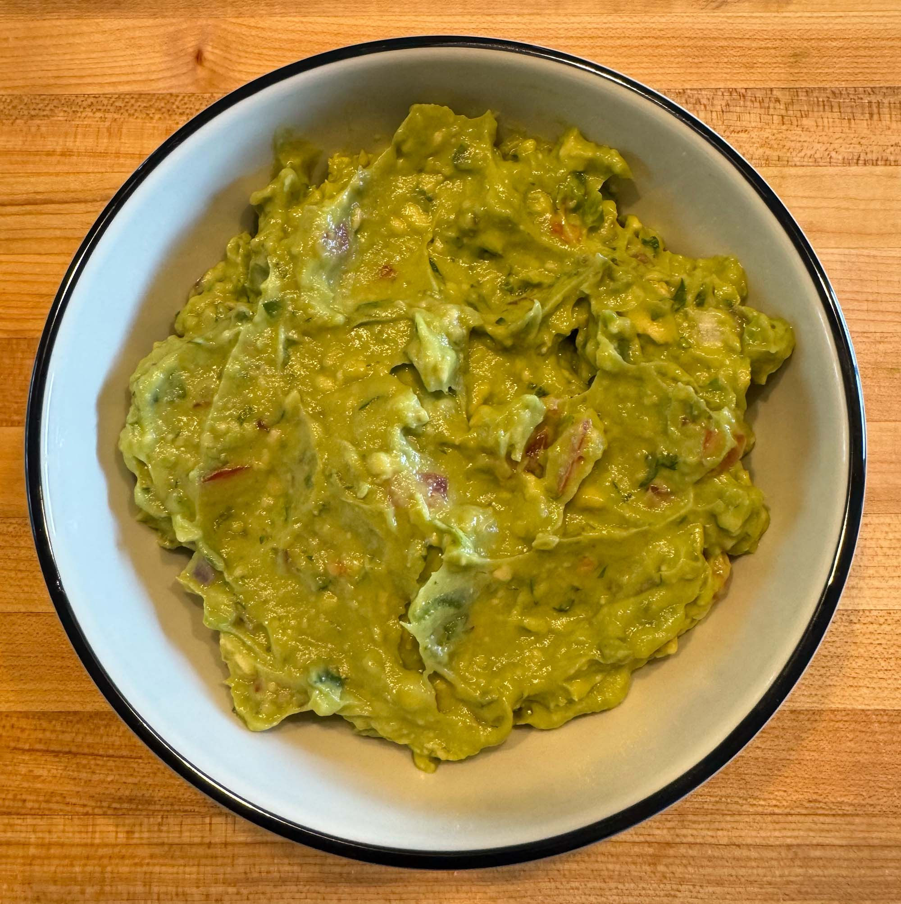

Tasty Cooking

Guacamole
Prep: 10 min / Ready: 10 min
8
Condiments
Gluten-Free
Healthy
Quick
Vegan
Vegetarian
A simple and delicious guacamole recipe.
Ingredients
4 avocados
2 cloves garlic, finely chopped
¼ white or red onion, chopped
1 roma tomato, chopped
1 lime, juiced
1 small to medium jalapeño, seeded and finely diced
4 tbsp chopped cilantro
Sea salt, to taste
Instructions
Cut avocados in half, remove pits, and scoop flesh into a bowl. Smash until desired consistency.
Add garlic, onion, tomato, and jalapeño. Squeeze lime juice over mixture and stir.
Add cilantro and sea salt to taste. Mix thoroughly to combine flavors.